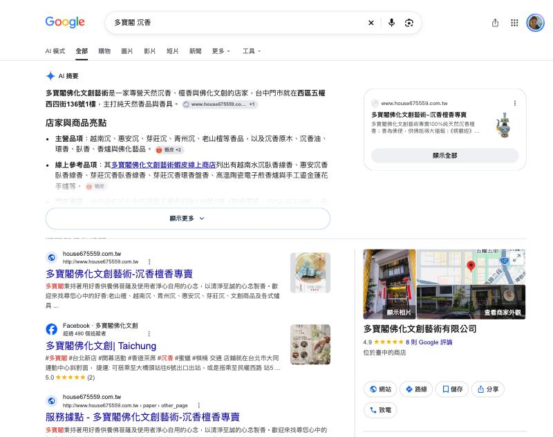
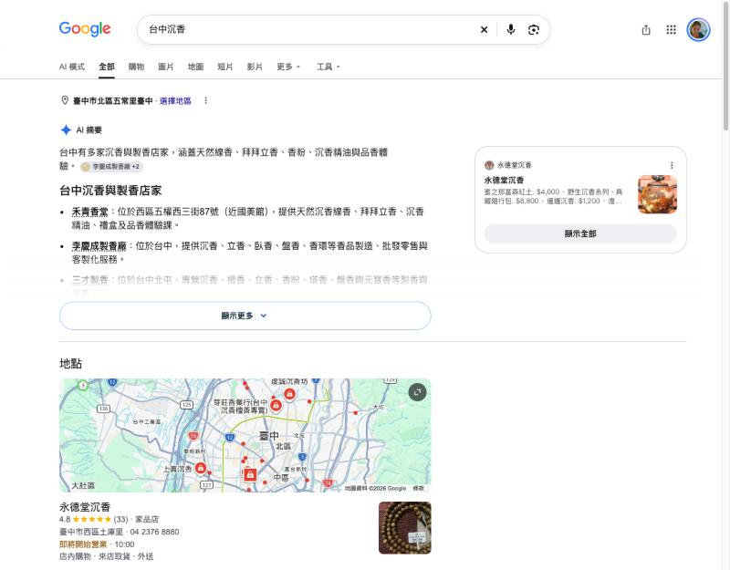
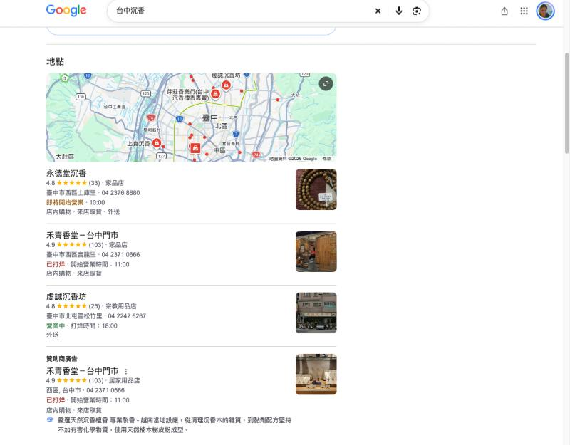
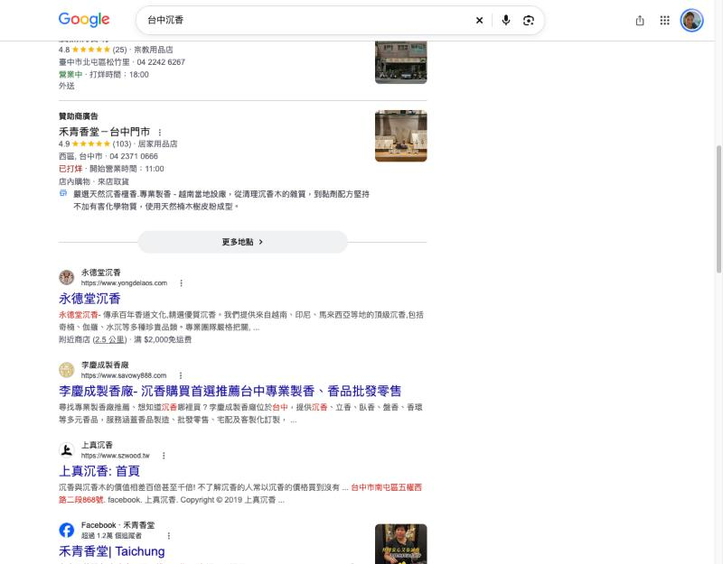
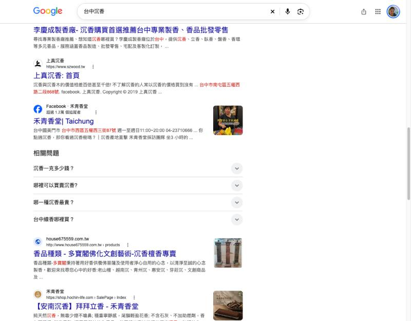
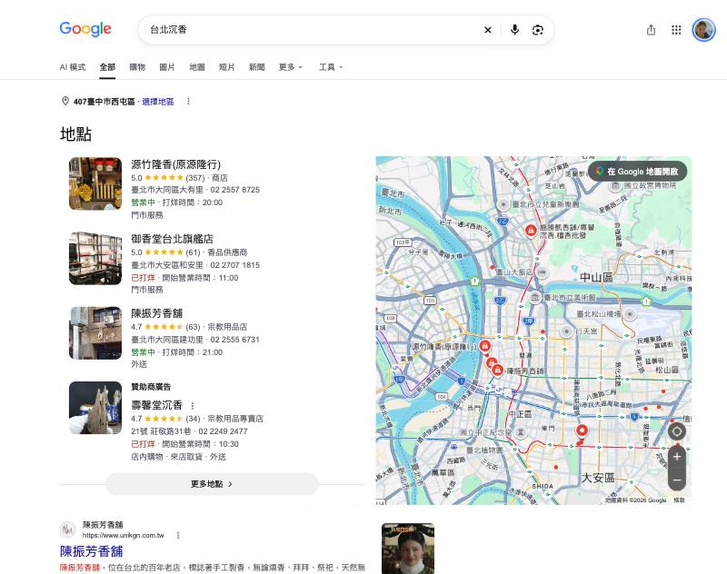

讓想找沉香、檀香的人，
在 Google 與 AI 搜尋裡找到多寶閣
多寶閣佛化文創藝術有限公司 搜尋能見度合作提案
瑪卡鎷網路行銷 徐昀 ｜ 2026/11/26 ｜ 本頁為提案版本，尚未發布
客人想買香之前，通常會先搜尋
不論是想供佛、想送禮，或只是想試試好的線香，多數人會先在 Google 或 AI 輸入問題。我們做的，是讓這條路上的每一步，多寶閣都在場。
讓搜尋找得到
把客人真正會搜的字，對應到網站裡該有的頁面與文章。
讓內容答得清楚
用文章回答「是什麼、怎麼選、差在哪」，客人讀完更容易信任。
讓成效看得見
每月用搜尋資料檢視曝光、點擊與排名，再決定下一篇寫什麼。
SEO、AIO、GEO 是什麼？和社群差在哪？
SEO：搜尋引擎最佳化
讓網站出現在 Google 搜尋結果的自然排名裡。客人主動搜尋「沉香功效」，我們寫的文章或商品頁就有機會被看到、被點進來。
做的事：網站結構、關鍵字、文章內容、商家資訊一致。
AIO：AI 摘要（AI Overviews）
Google 在搜尋頁最上方，用 AI 把答案整理成一段摘要，並附上引用的網頁連結。內容寫得清楚、有依據，才比較容易被引用。
做的事：把問題回答完整，資訊正確、結構易讀。
GEO：生成式引擎最佳化
客人直接問 ChatGPT、Gemini 這類 AI：「台中哪裡買沉香？」AI 會綜合網路上的資料回答。GEO 是讓多寶閣的資訊正確、清楚地出現在這些答案裡。
做的事：品牌與地點資訊一致、官網與文章可被讀取與引用。
社群：FB、IG、TikTok
把內容推給已經追蹤你、或被演算法推薦的人，適合維繫熟客、發布新品與活動。但貼文的生命較短，客人也不是在「找」你。
社群與搜尋互補，不互相取代。
| SEO / AIO / GEO | 社群 | |
|---|---|---|
| 客人的狀態 | 主動在找答案或商家 | 在滑內容，被動看到 |
| 內容壽命 | 一篇文章可長期被搜尋到 | 多半在發文後短時間內被看見 |
| 需要的節奏 | 每月穩定累積，依資料調整 | 需要頻繁發文、互動 |
搜尋店名時，AI 已經能正確介紹多寶閣
搜尋「多寶閣 沉香」，Google 的 AI 摘要能說出店家型態，並提到台北新店。這表示品牌字本身沒有問題，缺口在「還不認識你的人」搜尋的字。

Google 搜尋「多寶閣 沉香」截圖，2026/11/26。
搜尋「台中沉香」，多寶閣在哪裡？
這是台中店最直接的搜尋。在這次搜尋中，AI 摘要與地圖前幾筆都沒有多寶閣；自然排名中，多寶閣的商品頁排在後段，而且網址是未加密的 http。

AI 摘要與地圖區：沒有看到多寶閣。

地圖結果與贊助商廣告：同業在此區有評論與廣告曝光。

自然排名前段為同業官網與社群頁面。

多寶閣出現在較後面的自然結果。
搜尋條件：Google 搜尋，定位為臺中市西屯區，2026/11/26。搜尋結果會因地點與時間不同而變動，本頁為當下截圖。
台北新店剛開幕，搜尋入口要重新建立
搜尋「台北沉香」，地圖前四筆是台北既有的香舖與一則廣告，沒有多寶閣。新店要被在地的人找到，需要地圖資訊、評論與網站內容一起累積。

Google 搜尋「台北沉香」截圖，2026/11/26；搜尋定位為臺中市西屯區，結果在台北當地可能略有不同。
目前能確認的現況
官網
網址為 http，瀏覽器會標示「不安全」；網站由揚京建置，後台對 SEO 設定較不友善，文章與頁面的調整空間有限。
建議重新架設，新網站以 https 與可管理文章的架構為前提。
地點與店家資訊
台中店位於西區五權西四街 136 號 1 樓；台北新店於 2026/10 開幕，位置在大同運動中心附近。
台中、台北兩間門市的地址、電話與營業時間，在官網、Google 地圖與社群上都要一致。
社群
FB 與 TikTok 已經有經營，但發文頻率不固定。社群適合維繫熟客與發布新品，與搜尋是兩條不同的路。
網站內容
目前以商品分類為主，有沉香、檀香、貢香、臥香、爐具、海青袋等品項，缺少回答「怎麼選、差在哪」的文章。
從社群內容推測，來買的人可能有三類
以下是依 FB 簡介與貼文推測，正式內容方向會在訪談中和你確認。如果實際客群不是這樣，也可以當作未來可以開發的方向。
供佛、祭祖的信眾
依據：FB 簡介提到護持十方大德與佛子；網站有貢香、莊嚴俱供具。
搜尋偏向：貢香、供佛用香、爐具、怎麼拜。
品香、香氛愛好者
依據：11/20 貼文提到不喜歡味道很重、一聞就很俗的香，並使用小眾香氛、中式線香標籤。
搜尋偏向：沉香、檀香的種類、產地、價格與味道。
送禮與文創
依據：網站有海青袋、寧波金銀繡、璀璨蓮等文創商品與佳禮分類。
搜尋偏向：送長輩、送禮怎麼挑、文創禮品。
大家在搜什麼？先看全台的搜尋量
下列為 Google 關鍵字規劃工具的每月估算搜尋量（全台），用來判斷題目大小，不代表多寶閣會得到這些流量。
資料來源：內部關鍵字檔（聖寶華關鍵字研究）。「台中」、「台北」等地區字的搜尋量尚未取得，不在此頁列出數字。
一篇文章，回答一種搜尋問題
以同產業的聖寶華為例，每篇文章對應一個核心問題，並把客人常見的追問放在同一頁。
資料來源：聖寶華官網文章與客戶成效網站（更新 2026/11/07）。
香品同業：文章上線後，逐篇被搜尋到
下表是聖寶華 6 篇文章的 Google 搜尋表現。點擊欄位名稱可以排序。
宗教禮俗與在地服務：逐月累積
從「送媽媽生日禮物」的搜尋，認識汗蒸幕
南投的汗蒸幕與 SPA 品牌。有些客人原本是在找送媽媽的生日禮物，讀到文章後認識這個選擇。客戶回報 2026 年母親節當月營收接近 100 萬元，創下新高。
每個月，我們各自負責什麼
確認客群與題目
訪談現場客群、主力商品、想先被找到的搜尋字，決定第一批文章題目。
重建官網
以 https 與可管理文章的架構重新建站，統一台中、台北店資訊。文章在網站上線後開始發佈。
每月一篇文章
我們撰寫與上架；貴店提供商品、產地、使用方式等專業內容與事實確認。
每月檢視資料
用 Google 搜尋資料看曝光、點擊、排名，調整下一個月的題目。
AI 搜尋與店家資訊
讓官網、地圖與社群的店家資訊一致，文章也方便被 AI 摘要引用。
社群怎麼配合
社群由貴店現有團隊經營，我們可以把文章整理成可轉貼的素材。
本方案不包含商品目錄的逐項維護與上架；商品資料更新由貴店負責。
怎麼看有沒有效，以及合理的期待
每月會看的數字
搜尋曝光、搜尋點擊、重點關鍵字的平均排名，以及客人是否來詢問、到店。
資料來源為 Google Search Console，數字會附上期間與口徑。
合理的期待
搜尋需要時間累積，我們不保證特定排名或流量。從案例看，文章上線後的曝光與點擊多半是逐月增加，也會有季節與月份的起伏。
曝光不等於生意
曝光與點擊不是人數或訂單。詢問與營收的變化，需要貴店一起回報，才能判斷哪些文章真正帶來客人。
誠實呈現波動
像南港禮儀 2026/10 比 9 月下降約 10%，我們會照實呈現並說明可能原因，再調整方向。
選一個適合多寶閣的合作期間
三個方案內容相同，差別在於合作期間與文章篇數。文章於新網站上線後開始，每月一篇；付款為零利率分期。
金額均為新台幣（NT$）。實際合約條款以雙方簽訂之合約為準。
今天之後，我們可以這樣往前
需要你確認的事
實際的主力客群與熱賣商品、台北新店的店家資訊、官網網域是否沿用、想先被找到的搜尋字。
確認合作後
先確認方案與合約，接著進行訪談、新官網規劃與第一批文章題目。
謝謝，期待和多寶閣一起合作
瑪卡鎷網路行銷 徐昀
聯絡電話 0903 966 225
本提案為內部版本，尚未發布。